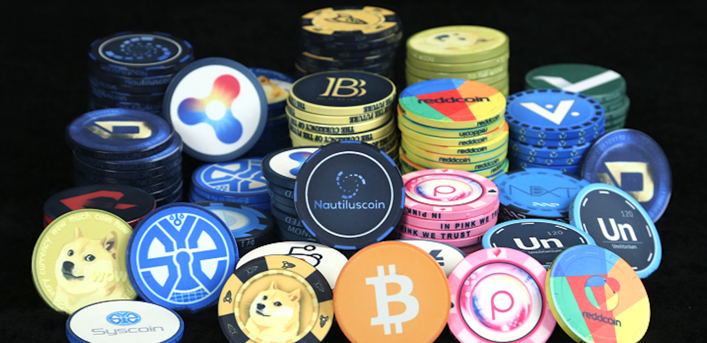
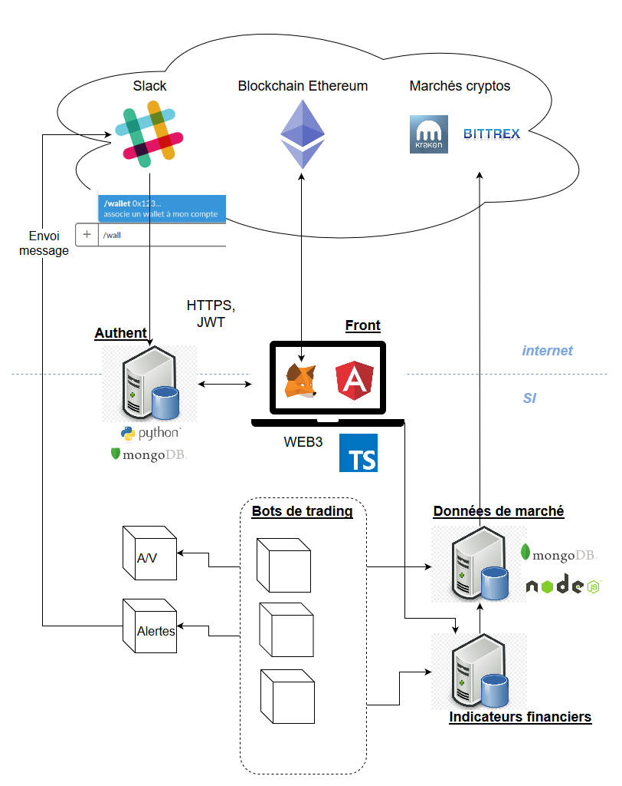
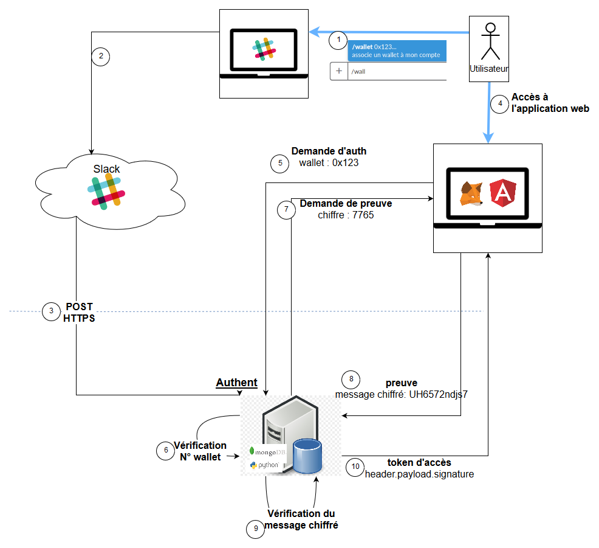
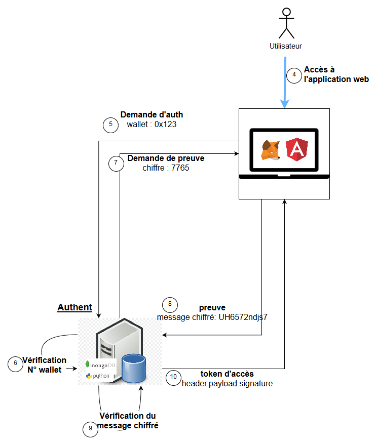

Smart-dev Cat-Amania
Cat-IA
(notes : S)
NIORT-1

Notions - Blockchain
- infalsifiable
- décentralisée
- publique
- permanente
Notions

Nos objectifs
-
Authentification et habilitation innovante à partir de la blockchain
Nos objectifs
-
Récupération dynamique des données de marché
Nos objectifs
-
Détermination intelligente des tendances futures à partir d'indicateurs et d'intelligence artificielle
-
Notification en temps réel sur des canaux originaux (slack)
-
Gestion automatisée de portefeuilles électroniques et des transactions sur la blockchain
Architecture
Architecture générale

Architecture
Authentification - Technologies utilisées
Architecture
Authentification (initialisation)

Architecture
Authentification
